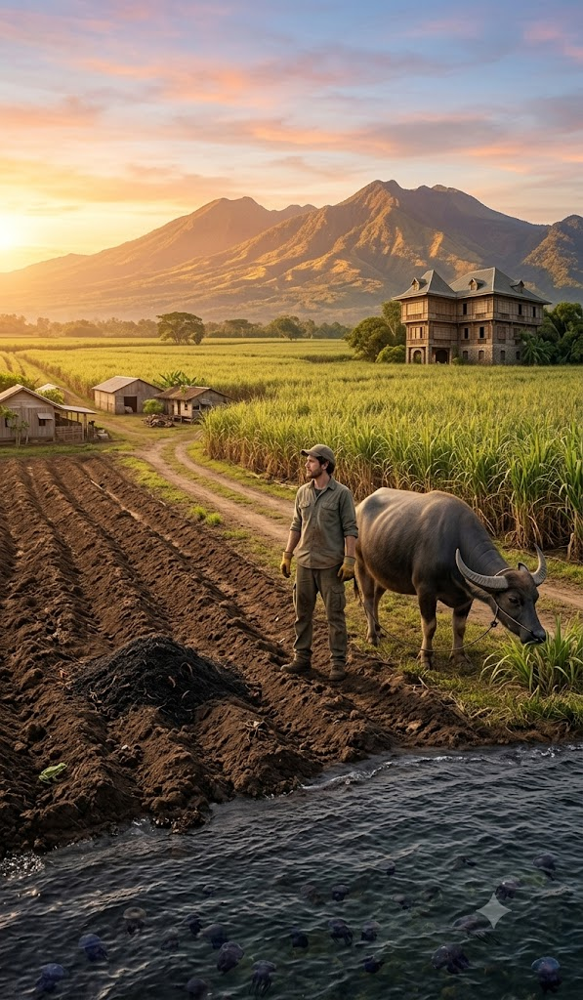

Life on the Hacienda
Originally written July 2010 • Uploaded to Facebook on Jul 7, 2010, 8:24 AM

I live in paradise. I couldn't ask for much more. I’m currently on the island of Negros in the Philippines, staying in a cool guestroom in a house built in the 1960s. My hosts are the owners of the plantation where I work, and life here comes with a swimming pool, plenty of mosquitoes, and an army of service staff. The current owners are the fifth generation of sugar growers, and many of the dishes I eat here are just as old as the family tradition. I’ve spoken to my host, who manages more than 80 hectares of land. He wants to manage more, but there are complex social issues deeply connected to sugarcane farming that he is trying to navigate effectively.
I live in a place perfectly positioned between a beautiful mountain range that glows when the sun comes up and the sea on the other side, where the sun goes down. The plantation includes the beach, though sadly, I can’t swim there right now; the waters are currently thick with black jellyfish.
My work starts early. The people here are incredibly friendly. I don't speak Tagalog or Ilonggo (the local dialect) very well, though a few words are similar to Spanish—days of the week and numbers are easy, but everything else is few and far between. It was hilarious my first day of work: I asked a farmhand for a ride to the fields, only to realize the "field" was about a two-minute walk away. It was more than a little embarrassing to show up on a motorcycle when most of the people I work with don't even have the means to buy their own groceries.
Many of them are missing teeth, yet they are full of joy. They constantly ask about my height, my shoe size, if I play basketball, where my girlfriend is, and where I’m from. They also ask about my lunch, and take great pleasure in sharing with me—most of the time, they finish it all. I have no complaints.
I live near the "Big House," a massive, unique home built in the 1930s that belongs to the plantation owner’s uncle, who is a priest. It has soaring ceilings and about six rooms. It even features a hidden staircase leading to the roof, where the view is spectacular. The interior is filled with original 1930s furniture made from Filipino hardwoods, matching the rich floors. Even with temperatures soaring above 30°C, the house stays remarkably cool.
I am based in Manapla, tucked between Victorias and the surrounding plantations. While this specific farm doesn't have a sugar mill, we sell most of our cane to the mills nearby. My work is hands-on. Today, I helped create fertilizer using a mixture of old cane fibers, organic household waste, carabao (water buffalo) manure, burnt molasses, and plenty of worms. The end product is a rich, black mixture we work into the ground before planting.
We work from 6:00 AM to 10:00 AM, break, and return around 1:00 PM. It is brutal work—there is zero shade, and we cover ourselves head-to-toe to survive the desert-like heat. My coworkers laughed at me on my first day when I showed up in a t-shirt and shorts. They convinced me to adopt the uniform: long pants, long sleeves, gloves, and a cap. I’m glad they did; between the sun, the massive spiders, the frogs, and the slithering things in the fields, it’s a necessary armor.
We are also accompanied by carabao. These massive water buffalo are twice the size of a cow with impressive horns. They are generally friendly, though they are always led by their noses. They are our workhorses, and honestly, I think they enjoy the work—mostly because they love the taste of the sugarcane.
I am happy working with my fellow field hands: Romulus (the overseer—I appreciate the irony), Elvis, Jayboy, Jay, Tito Calvo, and so many others. We struggle to communicate, but we get by. The plantation owner is currently putting the finishing touches on a movie about the sugarcane industry in Negros. I saw a preview—it’s very sentimentally charged and highlights the current limitations of the industry. Maybe we'll post it online soon. We are scheduled to film more footage, and I’m hoping to be part of it!